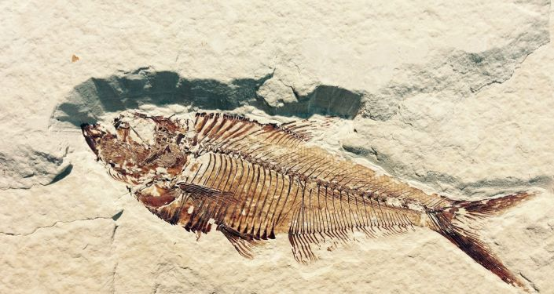

Ele pode ser imenso, surgiu antes dos dinossauros há 200 milhões de anos,
e resiste até hoje embora criticamente ameaçado de extinção.
Era conhecido dos povos antigos como os cartagineses, os gregos, romanos e persas.
Desde sempre, foi marcado pelas suas qualidades excepcionais para a culinária.
O rei inglês Eduardo II (1307-27) decretou que todo e qualquer esturjão
capturado deveria ser entregue aos senhores feudais. E ái de quem se atrevesse a comer um!

O site da britânica informa: “Os esturjões estão relacionados ao peixe-paddle (família Polyodontidae) da ordem
Acipenseriformes. Fósseis de esturjões aparecem pela primeira vez em rochas que datam do Jurássico Médio
(cerca de 174 a 163,5 milhões de anos atrás). Pensa-se que os esturjões tenham evoluído de um grupo anterior de
peixes chamado paleonisciformes, que apareceu no final do Período Siluriano (cerca de 419 milhões de anos atrás).

Os esturjões são encontrados na Ásia, em maior abundância nos rios do sul da Rússia e da Ucrânia; na Europa,
e nas águas doces da América do Norte. No início do verão, eles migram do mar para os rios ou para as margens
dos lagos de água doce para se reproduzirem.
Os esturjões estão entre os maiores peixes. Mas maior de todos é o tubarão-baleia, que pode superar as 20 toneladas.
Já, alguns beluga do Mar Cáspio, atingem mais de 5,5 m e 1500 kg . Estão também entre os peixes de vida mais longa,
alguns tipos vivem bem mais de 100 anos. Em quase todas as listas onde estão relacionados os maiores peixes de água doce do mundo,
a espécie esturjão ocupa as três primeiras posições. Em primeiro o Esturjão Beluga,
em segundo o Kaluga, encontrado na Rússia e China, e que também pode atingir até 1,500 kg e em terceiro, o esturjão branco,
cujo habitat é a costa oeste do Estados Unidos. A espécie pode atingir até 6 metros, e 1100 kg.
As ovas do esturjão foram a sua perdição. Consideradas uma ‘iguaria’, são constantemente
servidas em festas e casamentos, fazendo inveja aos olhos ocidentais, algo parecido com a sopa de barbatanas de
tubarão por parte dos asiáticos fazendo com que ambas as espécies estejam em risco. Hoje, com o esturjão em perigo de extinção, o caviar branco tornou-se uma raridade.
Esta variedade vem do esturjão albino beluga que vive no Mar Cáspio, principalmente nas áreas não poluídas perto do Irão. Um quilo pode valer mais de US$ 25 mil dólares.